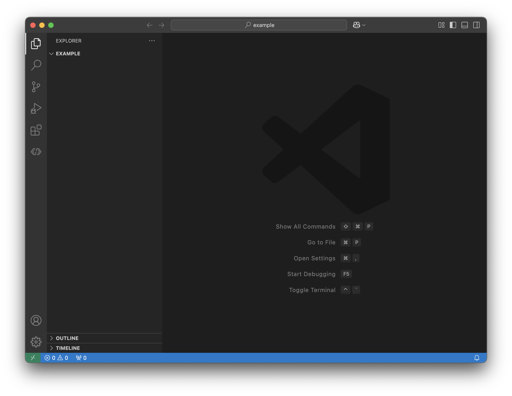
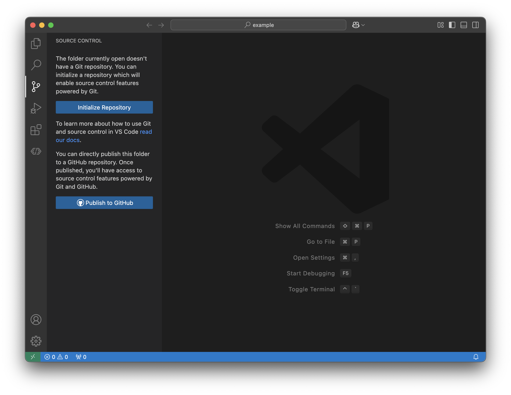

1.2 - What is git?
So far, we’ve defined some abstract concept of what a version control system needs to do (see 1.1 - Version Control). But these are just requirements, not an actual piece of software meeting these needs!
There are a few tools that all offer these features. But the most popular one -
and what we use - is called git.
Using Git
Let’s walk through a simple project to show the fundamentals of how git
works.
Make sure that VS Code and Git are installed on your machine (see Getting Started).
Open VS Code
Open the app called WPILib VS Code (the version may also be in the name).
You should see something that looks like this:
We’ll cover the features of VS Code in a further page, but for now, just follow along.
Open a new project
We need to create somewhere to store our repository. Repositories are just
folders tracked by git, so we just need to create a new folder to get
started in.
Press File > Open Folder to open a new folder. You can put this
wherever, but what’s important is that you make a new folder. For the rest of
this guide, I’ll create a folder called example.
Now VS Code should look like this:
Now we see the word EXAMPLE in the explorer window. This lets us know we’ve
opened the right project.
Initialize git in our project
In the activity bar (the leftmost bar), select the icon that looks like three dots connected with two lines. That’s a icon for version control. Sometimes version control will be referred to as “source control”, but they mean the same thing.
Select the Initialize Repository button to start a git repository in
the selected folder.
Now you should see:

Notice how, in the bottom left of the screen, VS Code now says main. This
is the currently active branch that we’re making changes on. Right now,
there’s only one branch. But we can change that later.
Track a new file
If you return to the explorer menu, we can start creating new files. Press the
icon of a page with a + sign to create a new file. Let’s begin with a file
called hello.txt.
What is .txt?
The .txt part of hello.txt is a file extension and is used to
tell programs like VS Code what kind of a file this is. txt is an
indicator that this is a plain text file.
Press enter to create the file, and it should show up in the explorer menu as green.

VS Code works with git to get status information on all new files. Green
means that the file is “untracked”, or new to git. White means that there
is no change to the file since the last time git saw it. Orange means that
there has been some modification to the file, but the file itself is not new.
Let’s put some content in our file. Here’s what we could write:
Hello world! The phrase "Hello, World!" is a common saying among
programmers. Lots of introductory programming lessons teach the student how
to write a program that says "Hello, World!".
The saying was popularized in the book "The C Programming Language" in 1978,
and has stuck around to this day.
Press Ctrl-S (or Command-S on MacOS) to save the file.
Tip
You can enable auto-save with File > Autosave. Pressing this
enables autosave.
Staging changes
Now that we’re ready to take a snapshot of the repository (which, for now, is
just one file), we can go back to the Source Control panel in VS Code.
We now see that git recognizes our new file and marks it with a small green
U. This U is short for Untracked, and it means that we haven’t told
git to track our file.

To tell git to start tracking our file, we only need to press the +
button. This stages our file, and tells git to do two things:
Start tracking the file if it’s not already. This means that
gitwill now monitor this file for changes since the last commit.Mark the changes in a tracked file as “ready for commit”. With
git, you don’t just commit all changes. You have to explicitly tellgitwhich file changes are good to be saved. This gives you more control over what gets committed and saved - and what doesn’t.
Tip
If you want to perform these file specific actions on the entire
repository (discard all changes or stage all changes) those options are
available in the top of the Changes bar as well.
Once we stage our changes, we should see this:

Notice that the file we staged is now in a different section of the Source
Control panel. It moved from Changes to Staged Changes. This is an
indication to us that the file has really been staged.
The letter also changed from U to A. Hovering over this tells us
Index Added. This means that this is file is added to the files tracked by
git.
We also can press the - button to unstage these changes. This keeps the
changes, but removes them from the group of changes that are staged.
Tip
You can stage changes in a file, then make changes in that same file. Only the changes present when you last staged the file will be in the staged section, the rest will be unstaged.
Why not track all files?
Considering the power of git, it seems like it’s reasonable to always
track everything. However, that’s not the case. Sometimes, there are files
that we don’t want git to track, that either don’t contain our source
code, or have sensitive information like passwords.
Committing changes
Once we’re ready for our changes to be saved forever, we can commit them.
When we make a commit, we tell git to take a snapshot of all staged
changes, and save them with a commit message.
Let’s do that now.
Above the box called Commit, there is a space for us to enter the message
of our commit. There are a few general guidelines on how to make a good commit message:
The changes should be reflected in the name. Don’t pick a name that doesn’t have any information, like
asdforhi mom.The changes don’t need to include information like the date, time, or author. Git stores that information automatically.
Normally, commit messages should be short and use active voice. Use verbs, not nouns.
Modify file.txtis better thanfile.txt modifications.
As an example, this can be our commit message:
Press the Commit button to take a snapshot of all staged changes. Now, VS
Code should look like this:

We’ve now got a button to Publish Branch. We get into that in the next
page.
Modifying Files
Let’s say we want to modify an already tracked file. This is really easy.
Let’s add some extra information to hello.txt:
--------------------------------
The origins of "Hello World"
--------------------------------
Hello world! The phrase "Hello, World!" is a common saying among
programmers. Lots of introductory programming lessons teach the student how
to write a program that says "Hello, World!".
The saying was popularized in the book "The C Programming Language" in 1978,
and has stuck around to this day.
I’ve highlighted the lines we added.
Now, notice the filename now appears in orange/yellow, and we see the changes
are visible in the Source Control panel in the activity bar.

Also note that the letter M is next to the file name under the Changes
section. This indicates that this is a change in a file that git tracked.
Let’s stage the file by pressing +.

And then we can commit our changes. Our message could be Add title to
hello.txt.
Tip
The fastest programmers know keyboard shortcuts. You can find a
complete list by pressing Help > Keyboard Shortcuts Reference.

Attention
To get the most out of this book, try repeating the steps we’ve done
already with your own ideas. Add a new file, aboutme.txt that contains
your name, high school, and favorite color and food. Try to follow the steps
we’ve done already.
Expanding our project
This has been a very simple project. But now, let’s consider adding another
file: goodbye.txt.
We could do what we’ve been doing - adding new data to a file, staging, and committing our changes. However, it’s normally good practice to make modifications in a separate branch and then merge in the changes when we’re happy with them.
This is especially important when writing code, because we want to make sure
that our main branch is safe and stable. If we have experimental features,
we don’t want to add those changes to main until we’re sure they work.
So let’s create a new branch to make some modifications on, then merge it into
the original branch (main) when we’re happy with what we’ve done.
Create a new branch
We need to create a new branch before we commit any changes. Commits always happen on the current branch, so we need to switch first.
Note
We could make our changes, and then switch branches, but that’s not the best practice. It’s easy to forget that last step when we’re writing a lot of code.
To create a new branch, we can press the text at the bottom left of the screen
that currently reads main. This tells us what branch we’re on right now.

We’ve got a few options, but for now we want to select the first option: Create new branch.

We now enter the name of our new branch. Branch names should be short and make
sense as to what features or changes we’re going to make in them. For now,
goodbye is a good name.
Press enter, and we see little change on the dashboard:
Notice that the branch at the bottom left has changes from main to goodbye.
Let’s go through the process of adding a new file. Navigate to the Explorer
through the action panel, and create a new file, just like we did with
hello.txt. Call this new file goodbye.txt.
Notice that, just like hello.txt at first, git doesn’t track our
file just yet. It’s marked green with a U to show it’s untracked.
We can enter some text in this file, like before:
Like before, we can save the file, stage it, and add a commit message, Create
goodbye.txt. Let’s commit that on this branch.
Now we need to merge our changes from the goodbye branch into the
main branch.
Click goodbye in the bottom left and this time, select main to switch
branches:

Now that we’re on main, take a close look at the git history:

Notice how Create goodbye.txt isn’t here. This is because we only see
commits for the head of the branch. The first two commits are here because
they happened on this branch. But Create goodbye.txt isn’t here because
that commit didn’t happen on this branch. Therefore, goodbye.txt can’t be
found in the file explorer. Try it! It’s gone!
Commit history back on goodbye
If you want, switch back to goodbye and take a look at the commit
history there. You’ll notice the first commits we made before switchign
branches are there, too. But we didn’t create those commits on the
goodbye branch.
This occurs because when we split off onto the goodbye branch, we needed
some point to “branch” from. That is always the current head (most
recent commit on the active branch). So when we created the goodbye
branch, the current head was used as the starting point.
If we had created the goodbye branch before we made those commits, back
when we had an empty folder, those commits wouldn’t be on the goodbye
branch.
If you still have goodbye.txt open, you will see something like this,
indicating that the file is no longer present:
The file goodbye.txt no longer exists, so it’s crossed out in red. We
can close the tab by pressing the X next to the filename.
But let’s say we’re happy with the changes on the goodbye branch, and we
want those to be combined with what we’ve got on main.
Merging branches
Important
Merging branches can become very tricky when there are conflicting changes on each branch. This example doesn’t address it, but a page in the future will: 1.4 - Merges.
If we want to merge changes from goodbye into main, that means that
we want the changes that we made on goodbye to be copied to main as
well, so that main has the desired changes applied.
Let’s make sure that we’re on the main branch by looking in the bottom left
of VS Code. If it says main, we’re good! If it doesn’t follow the steps
listed above to switch to main.
Now we need to open the Source Control panel in VS Code.
Next to the Source Control label, there are three dots.
Select the dots, then Branch > Merge.

Now we need to select the appropriate branch to merge from. This is the branch that we’re going to pull changes from.
Let’s select goodbye.
The merge happens automatically, and we get all changes from the goodbye
branch on main now!
Notice how, in the commit history, we see Create goodbye.txt. The commit was carried over!
Note
You can merge commits that don’t just create files, too. If you modify a file on another branch and commit those changes, those commits will be carried over as well. All commits from a branch are copied over upon a merge.